L’objectif de ce module est d’acquérir des connaissances générales sur les boues de stations d’épuration, ainsi que sur les techniques d’incinération de ces boues dans une UIOM.
En France chaque personne utilise en moyenne 200 litres d’eau par jour pour divers usages domestiques. Ces eaux usées sont rejetées dans un réseau d’assainissement chargé de les transporter vers une station d’épuration.
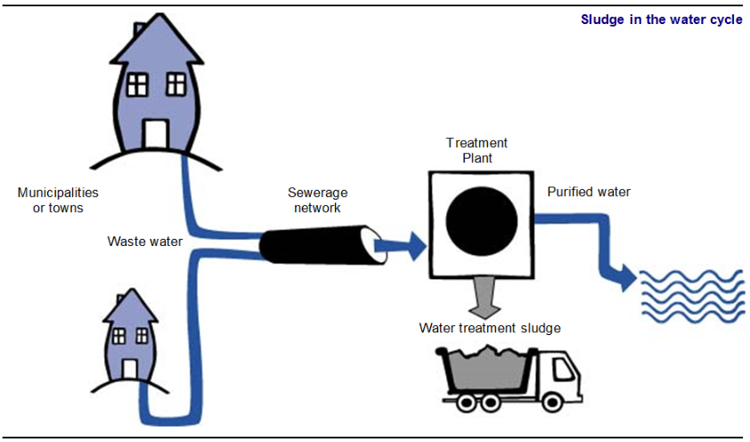
Fig. 1
La fonction de la station d’épuration est de retirer les matières indésirables pour pouvoir rejeter de l’eau propre dans le milieu naturel. Dans certains cas, l’eau épurée peut être réutilisée.
La majeure partie des matières retirées à l’eau se retrouve concentrée dans ce que l’on appelle les « boues urbaines ». Ces boues contiennent majoritairement de l’eau (plus de 70\ La présence de certaines substances métalliques, telles que le cadmium et le mercure (qui rentrent dans la composition des piles), pose des problèmes croissants pour l’épandage agricole.
À partir de 2002, la mise en décharge de ces boues sera très probablement interdite. Le traitement des boues de stations d’épuration par incinération devient un sujet de plus en plus d’actualité. C’est pourquoi plusieurs de nos incinérateurs traitent des boues de stations d’épuration.
Production de boues urbaines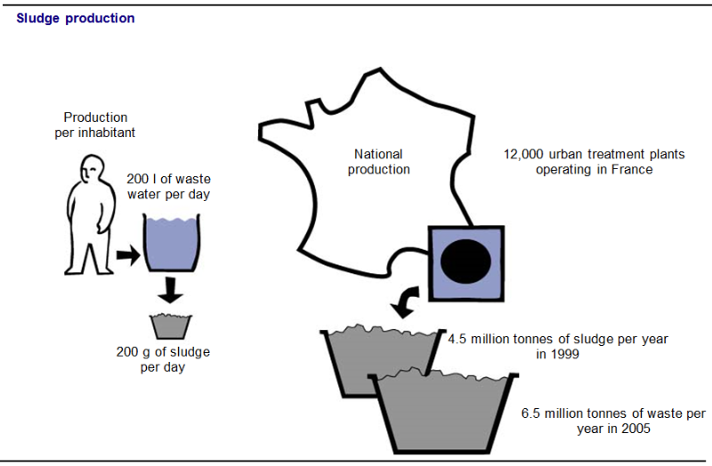
Fig. 2
Les boues industriellesCertaines industries produisent elles aussi des boues issues du traitement de leurs eaux usées. Suivant les cas, ces boues « industrielles » pourront être considérées comme des « déchets industriels banals » (par exemple : fabrication de papiers ou industrie agro-alimentaire).
Dans d’autre cas, la composition chimique de ces boues les classera parmi les « déchets industriels spéciaux » et elles devront être dirigées dans des unités de traitement adaptées (par exemple : traitements de surface, chimie).
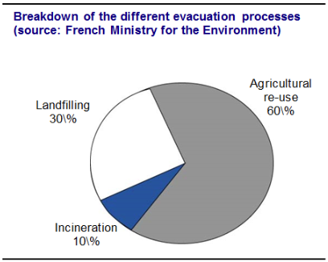
Fig. 3
La valorisation agricole des boues découle de pratiques anciennes. De plus, les boues ont en général une bonne valeur agronomique (présence de fertilisants, d’oligo-éléments et de chaux). Actuellement, l’épandage de boues concerne moins de 1\
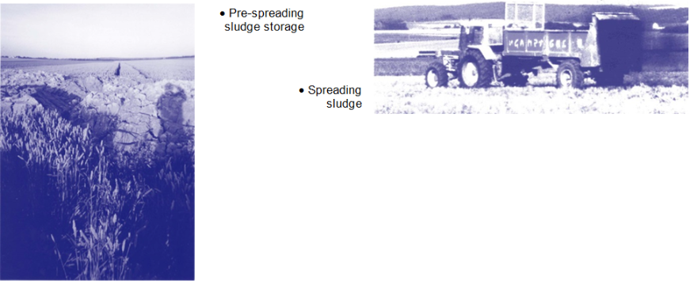
Fig. 4
L’épandage après compostageLe compostage est une technique relativement ancienne qui est, entre autres, utilisée pour les ordures ménagères et les déchets verts. Pratiquement, le compostage correspond à une dégradation biologique des matières organiques. Le compostage de boues s’effectue en aérant un mélange de boues fraîches et de coproduits (agent structurant riche en fibres tel que les déchets verts ou les écorces de bois).
Par rapport à un épandage « classique », le compostage présente l’avantage de réduire la quantité de produit, de limiter les odeurs (stabilisation) et d’obtenir un produit sans risque pour la santé publique.
Il existe déjà des plates-formes de compostage de boues en France. Chaque année 40 000 tonnes d’OM (après tri sélectif de la fraction organique) et 10 000 tonnes de boues de stations d’épuration sont ainsi traitées et entrent dans un plan d’épandage.
La réglementation exige une humidité inférieure à 70\ À partir de 2002, le stockage en décharge devra être limité aux déchets dits « ultimes », c’est-à-dire ne pouvant être valorisés « dans les conditions techniques et économiques du moment ». Dans ces circonstances, la plupart des boues urbaines ne pourront plus être admises en décharge.
Les boues sont à définir selon trois critères :
La caractérisation des boues est très importante pour pouvoir définir correctement les filières d’élimination possibles. Par exemple, une boue dont les teneurs en micro-polluants organiques sont trop importantes devrait être dirigée soit vers l’incinération, soit vers la mise en décharge.
Plus précisément, on s’attachera à la liste des paramètres suivants :
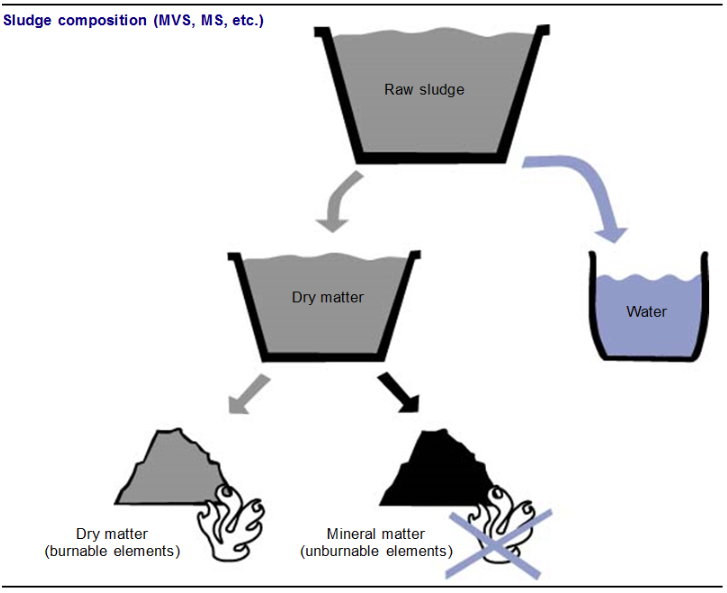
Fig. 5
Les différents états physiques d'une boueEn pratique, on utilise la classification suivante :
Le schéma ci-dessous permet de visualiser plus précisément l’origine des boues dans une station d’épuration.
Le traiteur d’eaux pourra donc avoir jusqu’à trois grands types de boues à gérer s’il dispose d’un traitement primaire mécanique, d’un traitement biologique et d’un traitement physico-chimique (déphosphatation).
Boues primaires "mécaniques", boues de décantationElles sont le résultat d’une première décantation par gravité des eaux usées et sont donc composées en majorité de petits éléments minéraux.
Boues biologiquesEn France, 98\ Il existe plusieurs types de traitements biologiques des effluents :
À chacune de ces solutions correspond un type de boue différent.
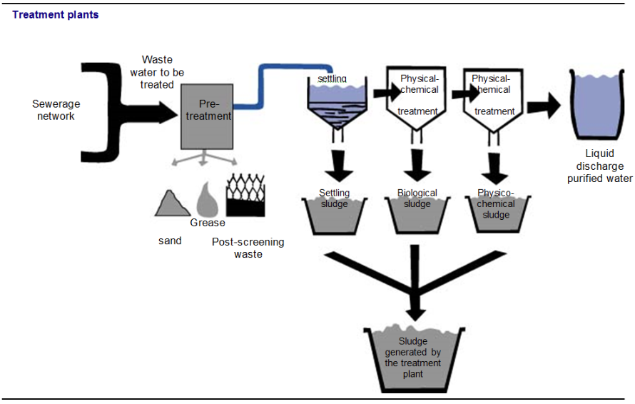
Fig. 6
Boues physico-chimiquesLes traitements physico-chimiques (ajouts de produits chimiques dans les eaux usées) concernent seulement 1,3\
BilanLe caractère commun de ces boues est de constituer un produit encore très liquide, de valeur énergétique généralement faible ou nulle. Certaines sont chimiquement inertes, mais celles qui proviennent de traitements biologiques peuvent fermenter et dégager des mauvaises odeurs. Afin de rendre possible leur manipulation, et éventuellement leur recyclage, le traiteur de boues doit définir une filière de traitement des boues adapté. Le traitement des boues a deux fonctions principales :
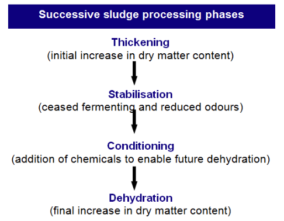
Fig. 7
{Diminution de la teneur en eau}
L’augmentation de la siccité des boues commence par un épaississement qui a pour but de rendre possible une déshydratation mécanique ultérieure en effectuant une première réduction de la quantité d’eau contenue dans les boues. Suite à l’épaississement, les boues vont devoir être stabilisées.
StabilisationL'objectif premier de la phase de stabilisation des boues de station d'épuration est de réduire les odeurs désagréables tout en limitant toute reprise de fermentation après traitement. En pratique, cette opération garantit que les boues sont plus respectueuses de l'environnement.
HygiénisationL’hygiénisation concerne principalement les boues destinées à l’épandage. Le but de cette opération est de réduire au maximum la toxicité des boues.
DéshydratationUne fois stabilisées, et selon l’exutoire défini préalablement, les boues vont subir une déshydratation mécanique qui va permettre de multiplier la siccité par trois ou quatre, voire dix pour certains filtres-presse. La siccité à obtenir après déshydratation doit être :
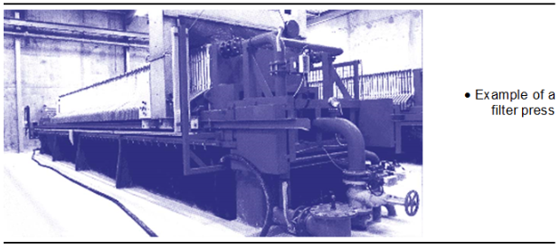
Fig. 8
Les principaux procédés utilisés pour une déshydratation mécanique des boues permettent d’atteindre des niveaux de siccité variables :
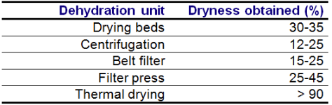
Fig. 9
À côté de la mise en décharge et de la valorisation agricole, l’incinération constitue la troisième voie principale d’élimination des boues de stations d’épuration. Ce type de traitement peut être mis en place pour des boues de siccité supérieure à 15\ Dans les cas de l’incinération et de la co-incinération le bilan massique constaté est le suivant (pour des boues de siccité 25\
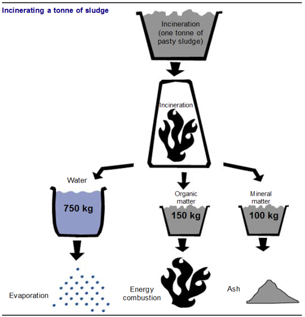
Fig. 10
Dans la plupart des cas, l’incinération spécifique des boues de stations d’épuration urbaines est réalisée dans des fours à lit fluidisé, plus rarement dans des fours rotatifs et à soles étagées. Pour des raisons de prix de traitement des gaz de combustion notamment, ce type de filière est réservé aux stations d’épuration de grande taille.
La technique du lit fluidisé est la plus employée en France. Ceci s’explique par les avantages suivants :
Le principe du four à lit fluidisé consiste à réaliser la combustion de la matière organique dans une enceinte verticale en acier garnie de réfractaire, de section cylindrique, dont le cœur est constitué d’un lit de sable fluidisé porté à haute température (environ 750 °C).
La fluidisation est obtenue en soufflant l’air de combustion sous le lit de sable à travers une grille équipée de tuyères en acier. La boue est introduite à l’intérieur du lit fluidisé en un ou plusieurs points selon la taille du four. Au-dessus du lit fluidisé, les gaz sont conduits dans une zone de post-réaction, « la zone revanche », dont le grand volume permet un temps de séjour très largement supérieur aux 2 secondes, à 850 °C, réglementaires. Les points devant faire l’objet d’une attention particulière lors de la conception et de l’exploitation d’une telle installation sont :
Les deux procédés développés par Degremont et OTV sont respectivement NIRO®HTFB et PYROFLUID®.
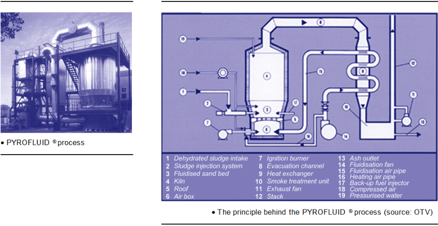
Fig. 11
Récupération de chaleur dans les gaz de combustionDans la plupart des cas, la matière organique des boues possède un pouvoir calorifique insuffisant pour assurer à la fois l’évaporation de l’eau et l’élévation à 850 °C dans l’enceinte du four. Pour ne pas consommer de combustible d’appoint, il est donc nécessaire de récupérer une partie de l’énergie des gaz de combustion, soit par préchauffage de l’air de fluidisation dans un échangeur gaz de combustion-air, soit par préséchage des boues à des siccités supérieures à 40\
Épuration des gaz de combustionL’objectif est d’éliminer les polluants afin de respecter la réglementation relative aux émissions dans l’atmosphère. Les procédés de traitement des gaz de combustion sont variés :
La conception de la chaîne et des équipements doit tenir compte d’une des spécificités de l’incinération sur four à lit fluidisé qui est l’envol de la totalité des matières minérales dans les gaz de combustion, conduisant à des teneurs en poussières bien supérieures à celles rencontrées pour les OM. Il faut également tenir compte de la destination finale des cendres et des résidus d’épuration des gaz de combustion.
Devenir des cendres et des résidus d’épuration des gaz de combustionDepuis 1996, les cendres séparées par procédés uniquement physiques, sans addition de réactifs, peuvent, sous réserve de satisfaire à un certain nombre de tests, être valorisées en technique routière, dans la fabrication de ciments, être épandues en agriculture (cendres sèches) ou être évacuées en décharge de classe 2. Par contre, les résidus de l’épuration physico-chimique (ajout de chaux), souvent présentés sous la forme d’un gâteau de filtre presse, doivent être évacués en CET de classe 1. De ce fait, on cherche au maximum, à récupérer la matière minérale par des voies purement physiques de séparation, du type filtre électrostatique. Les cendres volantes issues de l’incinération de boues en lit fluidisé semblent posséder des propriétés qui font défaut aux cendres d’OM :
Il faut dans ce cas prendre en compte les caractéristiques des boues, celles des ordures ménagères, les capacités de l’UIOM d’accueil et la réglementation.
Co-incinération avec des boues pré-séchéesPour des stations d’épuration de taille importante, la co-incinération peut s’effectuer avec des boues préséchées à des siccités variant de 60 à 90\
Il est à noter qu’à 65\ L’évolution technologique de la co-incinération de boues préséchées concerne plus les techniques de séchages préalables que le mode d’introduction proprement dit.
Co-incinération avec des boues pâteusesLes expériences et les informations sur la co-incinération des boues pâteuses sont peu nombreuses. Quelques procédés sont validés et actuellement en marche sur site. C’est une technique en plein essor ayant déjà fait l’objet de plusieurs appels d’offres dans de grandes collectivités. À l’heure actuelle, des unités importantes sont en fonctionnement sur plusieurs UIOM. Dans tous ces cas, la co-incinération concerne des boues pâteuses, ce qui évite un séchage préalable du produit et donc un coût d’exploitation trop élevé.
Séchage des bouesL’objectif principal du séchage est de réduire fortement la masse (M) et le volume (V) des boues en provoquant l’évaporation de l’eau qu’elles contiennent :
Par ailleurs, cela permet d’hygiéniser le produit en détruisant les germes pathogènes. Il existe trois modes de séchage :
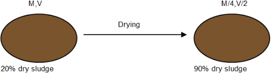
Fig. 12
Séchage directLe séchage, c’est-à-dire l’évaporation de l’eau contenue dans les boues, s’effectue grâce à une paroi chaude réchauffée au moyen d’un fluide (air chaud, par exemple) circulant dans une double enveloppe. Ce type de séchage concerne, entre autres, les unités de Rennes (Sobrec) et de Sète (Setom).
Séchage indirectUn gaz chaud et sec parcourt les boues et absorbe leur humidité. Ce type de séchage concerne par exemple les unités de Nice et de Quimper (Briec).
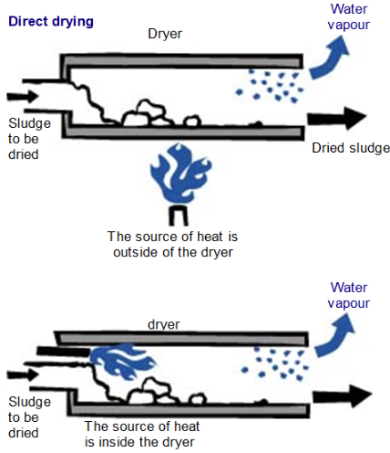
Fig. 13
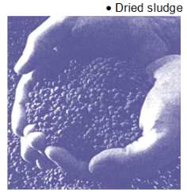
Fig. 14
Séchage mixteMélange du séchage direct et indirect.
Le séchage des boues génère une buée qui correspond à l’eau contenue dans les boues qui s’est évaporée. Une partie de ces buées (partie liquide) est renvoyée dans une station d’épuration, l’autre (les incondensables) peut par exemple être recyclée dans le circuit d’air secondaire du four.
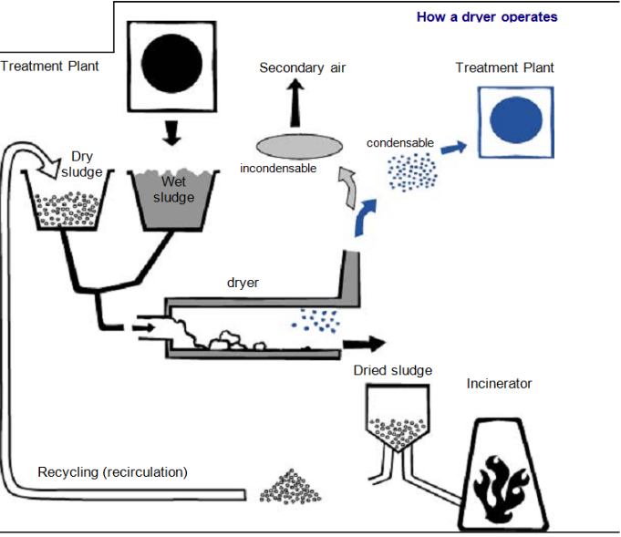
Fig. 15
Principaux problèmes de fonctionnement d'un sécheurLes principaux types d’incidents rencontrés sont :
À ses débuts, la co-incinération se résumait à un stockage et à un simple mélange des boues avec les OM en fosse. La réglementation, appuyée par des contraintes d’exploitation croissantes, a poussé vers un stockage séparé et à des procédés où les boues ne rejoignent les ordures ménagères qu’à l’intérieur de l’enceinte du four. Cela permet désormais une exploitation plus souple quant à la gestion des deux flux entrants.
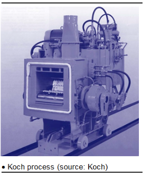
Fig. 16
Introduction par émiettage mécaniqueLes boues sont émiettées grossièrement grâce à des coupelles rotatives et apposées sur la première zone de grilles, c’est-à-dire dans la zone de séchage. Grâce aux mouvements de la grille, cette technique permet de retenir les particules de boues au niveau de la zone de combustion, ce qui a pour effet de réduire l’impact de la co-incinération sur les Refiom (production moindre de cendres volantes). Ce mode d’introduction est utilisé par la technologie développée par Martin et Koch.
Cette méthode d'injection est utilisée dans les technologies développées par Martin et Koch.
Introduction par extrusionLes boues sont filées dans les injecteurs et transformées en « boudins » d’une vingtaine de millimètres de diamètre. Ces boudins sèchent au cours de leur formation, puis se détachent sous l’effet de leur propre poids et tombent sur les grilles. De ce fait, ils sont mélangés aux ordures ménagères et incinérées. Le diamètre des agglomérats de boues étant important, le risque est de voir les boues cuites en surface et imbrûlées à l’intérieur. Ceci aurait pour effet d’augmenter considérablement la teneur en imbrûlés des mâchefers qui est par ailleurs limitée par la réglementation à moins de 5\ Cette technique est utilisée par les sociétés CNIM (en trémie avec les OM) et Degremont (procédé IC 850 installé sur la paroi du four).
Introduction par pulvérisationÀ la sortie de la chambre de combustion Cela consiste à pulvériser des boues pâteuses à contre-courant d’un flux de gaz ascendant à haute température, en l’occurrence les gaz de combustion provenant de l’incinération des OM. L’équipement utilisé se présente sous la forme d’une tour, installée au-dessus de la chambre de combustion du four. Les gaz de combustion chauds provenant de l’incinération des OM sont introduits à la base de cette tour, et un pulvérisateur situé à mi-hauteur projette de fines gouttelettes de boues vers le bas. Au contact du flux de chaleur, la partie liquide de la boue se vaporise, et les matières sèches s’enflamment et brûlent instantanément. La majorité des boues est transformée en cendres volantes qui, si elles sont récupérées au niveau de l’électrofiltre, viennent augmenter la quantité de Refiom. La société SGEE (procédé Ibisoc) développe cette technique.
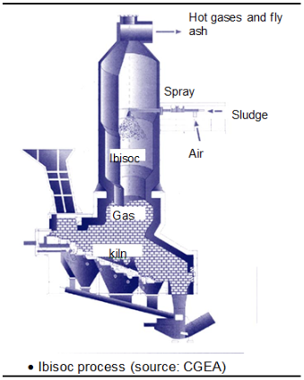
Fig. 17
Dans le four ce procédé constitue un compromis entre l’introduction par pulvérisation à la sortie de la chambre de combustion et l’introduction par extrusion. Les boues sont pulvérisées grâce à de l’air comprimé, ce qui permet de les transformer en particules très fines. Ces dernières tombent sur la grille (zone de séchage) et sont alors incinérées avec les ordures ménagères. Dans ces circonstances, la matière minérale contenue dans les boues se retrouve plutôt dans les mâchefers. Ce mode d’injection est utilisé pour les procédés Inor (société Schwing) et Pyromix (Vivendi).
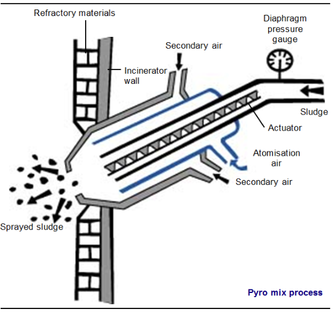
Fig. 18
Contraintes de la co-incinération des boues avec les OMDans le cas d’un projet d’installation de co-incinération des boues avec les OM, différents aspects sont à prendre en compte.
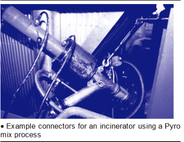
Fig. 19
Contexte socio-économiqueMême si la filière de valorisation en agriculture semble représenter la solution la moins chère, l’opinion publique n’est pas très favorable. Pour les communes qui ne peuvent pas épandre leurs boues, il faut trouver des solutions de remplacement. Le choix de l’incinération spécifique est limité par un coût d’investissement très élevé. D’autre part, cette technique n’est pas encore satisfaisante en terme de valorisation énergétique. La co-incinération paraît donc une solution relativement bien adaptée, à condition qu’il existe une UIOM à proximité pouvant accueillir les quantités de boues et que les flux générés soient assez réguliers (en tonnage et sur la durée) pour rentabiliser l’investissement initial. Pour cela, on peut envisager des regroupements de stations dont les boues ont des caractéristiques à peu près homogènes (siccité, teneur en MVS).
Contraintes techniquesEn plus des effets liés aux caractéristiques des produits entrants, l’impact de la co-incinération dépend des facteurs suivants :
Impact sur la charge de grille
Chaque fabricant précisera une charge maximale admissible (en kg/m2) en fonction de la technologie utilisée et de la capacité de l'incinérateur en termes de déchets ménagers . Une marge de sécurité sera généralement appliquée entre cette charge maximale admissible et la capacité optimale de l'incinérateur. Ajouter des boues aux ordures ménagères équivaut à augmenter la masse (par rapport à la seule incinération des ordures ménagères), qui doit être compatible avec la charge maximale sur la grille.
Impact sur les mâchefers
L’impact sur les mâchefers s’évalue par rapport aux limites fixées par la réglementation (circulaire de 1994). La composition des boues étant différente de celle des OM, les mâchefers issus de la co- incinération peuvent subir des modifications par rapport à une marche normale du four. Cela peut avoir pour conséquence de changer la classe du mâchefer (Valorisable, Maturable ou Stockable) et donc de modifier les coûts d’exploitation relatifs à l’évacuation de ces sous-produits (schématiquement 0, 100, 300 francs HT, respectivement pour V, M et S). Le risque potentiel le plus élevé concerne la teneur en imbrûlés qui est limitée à 5\
La présence d'imbrûlés dans les mâchefers dépendra :
Impact sur le volume des gaz de combustion
Le débit des gaz de combustion est limité par le dimensionnement des installations de leur traitement et de la puissance du ventilateur de tirage qui maintient l’ensemble de l’installation en dépression. Cette dépression est nécessaire pour éviter les nuisances olfactives, les retours de flamme vers la fosse de stockage des OM, et les fuites de gaz de combustion vers l’atmosphère extérieure.
La co-incinération de boues pâteuses peut entraîner une augmentation du volume des gaz de combustion produits.
Cela s’explique par la teneur en eau relativement élevée qui génère de la vapeur lors de l’introduction dans le four. La co-incinération avec des boues préséchées pose moins de problème de ce point de vue.
Impact sur REFIOM
Du fait de la teneur relativement élevée des boues en soufre (jusqu’à dix fois celle rencontrée pour les OM), la neutralisation des gaz de combustion, et donc du SO2, générera plus de Refiom. D’autre part, une augmentation de la production de cendres volantes, piégées au niveau de l’électrofiltre, se traduit également par une croissance de la production de Refiom.
Impact sur l'ensemble incinérateur-chaudière
La co-incinération de boues avec les OM peut éventuellement conduire à une usure accrue de l’installation. Ces phénomènes peuvent se produire qu’après plusieurs mois, voire plusieurs années. La tenue générale du complexe four-chaudière lors d’une co-incinération dépend essentiellement des risques d’accrochages ou de projection de boues sur les parois.
Ce type d’événement peut survenir :
La réception et le stockage des boues « brutes » se font en principe dans une fosse bétonnée indépendante de la fosse à OM. C’est le cas, par exemple, des usines de Rennes et de Sarcelles où les boues sont stockées avant d’être dirigées vers le sécheur à l’aide d’une pompe à boues.
Conditions de stockage des boues pâteusesPrévoir un système de dévoûtage Dans tous les cas, l’élément de stockage principal doit être équipé d’un matériel assurant l’extraction des boues. En effet, ces produits ont tendance à « voûter », induisant ainsi des problèmes de vidange.
Prévoir des ouverturesBien que stabilisées, les boues continuent de fermenter. Cette fermentation génère la production de gaz méthane (CH4). Si aucune aération n’est prévue, le risque d’explosion est important. Il faut donc équiper les éléments de stockage d’« évents », c’est-à-dire d’ouvertures permettant au gaz de s’échapper dans l’atmosphère et évitant ainsi une surpression dangereuse.
Réduire les nuisances olfactivesLa création des évents induit des dégagements d’odeurs nauséabondes dans l’atmosphère. Pour remédier à ces nuisances olfactives, on peut :
La contrainte la plus importante en matière de stockage des boues séchées concerne les risques de départs d’incendie. Ainsi, de nombreux départs de feu ont été constatés au niveau de la trémie de stockage des fines. Ces risques d’inflammation de ces fines sont dans ce cas d’autant plus importants que les granulés de boues séchées sont à une température trop élevée en sortie de vis de refroidissement et que le taux de matières organiques dans les boues séchées est très élevé.
Transport des boues vers l'incinérateurLes boues peuvent être transférées de plusieurs manières :
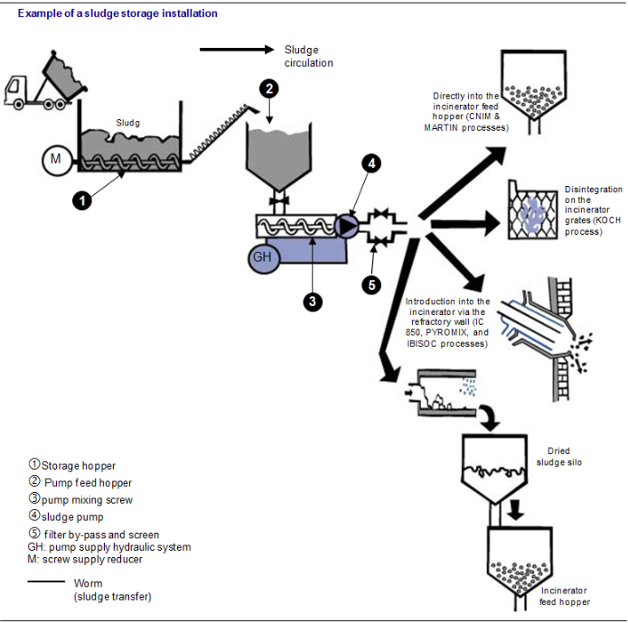
Fig. 20
Le PCI des boues, en kilocalories par kilogramme, peut être calculé comme suit :
\[ PCI_boue = 5 500 (MVS content) (dryness) - 600 (1 - siccité) \]
Exemple comment calculer le PCI des boues urbaines (siccité 20\equation
PCI_{{boue} = 5.500 0.65 0.20 - 600 (1 - 0.20) = 235 \, kcal/kg equationQui donne qui donne qui donne 65 / 100 20 / 100 20 / 100
PCI pour un mélange ordures ménagères + bouesCommencer par calculer le pourcentage de boues et d'ordures ménagères dans le mélange incinéré :
\[ Rboue = {Tonnage boue}{(Tonnage ordures ménagères + tonnage boues)} \]
\[ RHshW = {Tonnage ordures ménagères}{((tonnage ordures ménagères + tonnage boues))} \]
Calculer ensuite le PCI du mélange en utilisant la formule suivante :
\[ NCVmixture = Rboue PCI_boue + RHshW PCIHshW \]
Exemple de calcul de NCV pour un mélange de boues + déchets ménagers\[ Rboues = {1 t de boues}{((5 t d'ordures ménagères + 1 t de boues)} = 0,17 = 17\ \]
\[ RHshW = { 5 t d'ordures ménagères}{((((5 t d'ordures ménagères + 1 t de boues)))} = 0,83 = 83\ \]
\[ PCImélange = 0,17 235 + (0,83) 2000 = 1700 kcal/kg \]
Ce qui donne qui donne 17 / 100 83 / 100
blue{Bactéries}
Être vivant microscopique.
blue{décantation}
Séparation naturelle des matières plus denses que l’eau qui se rassemblent dans le fond d’un récipient.
blue{Eaux usées}
Eau rejetée après une utilisation donnée (exemple : eau de vaisselles).
blue{Éléments traces métalliques}
Composés que l’on appelle souvent à tort les « métaux lourds » (mercure, plomb, cadmium, etc.).
blue{Micro-organismes organiques}
Composés toxiques dans les hydrocarbures, les détergents et les pesticides.
blue{Épandage }
Opération qui consiste à répandre un produit à la surface d’un sol dans l’objectif d’une dégradation naturelle permettant un apport en matières fertilisantes.
blue{Épuration des eaux}
Traitement des eaux usées avant rejet dans le milieu naturel (ou réutilisation).
blue{Hygiénisation}
Opération dont le but est de détruire les micro-organismes pathogènes dans le but de préserver la santé publique.
blue{Lagunage}
Technique d’épuration des eaux consistant à les faire circuler très lentement dans des bassins creusés directement dans le sol.
blue{Micro-organismes}
Êtres vivants que l’on ne distingue pas à l’œil nu.
blue{Micro-organismes pathogènes}
Petits êtres vivants qui sont à l’origine de nombreuses maladies.
blue{Siccité}
Autre terme pour désigner la concentration en matières sèches contenues dans un échantillon.